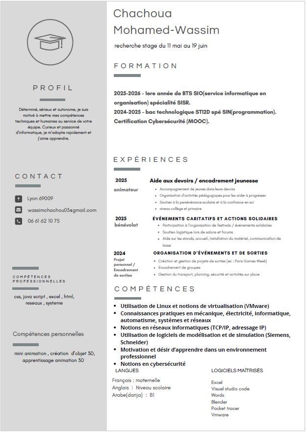

Accueil
Je m'appelle Mohamed Wassim Chachoua, je suis actuellement en BTS SIO premiére année au lycée la Martinière Duchère.
Le BTS SIO
Formation aux métiers de technicien informatique : administration réseau ou développement d'applications.
L'option SISR
La spécialité SISR : Solutions d'Infrastructure, Systèmes et Réseaux.
Le portfolio
Ce portfolio illustre les compétences développées durant mon cursus.
A propos de moi
Mon CV :

Ateliers Professionnels de la 1ère année
Contenu des missions de la 1ère année:
Installation d’un serveur Web: Dans le cadre d’AP Support & Système lors de la 1ère année de BTS SIO option SISR: installation et mise en service d’un serveur HTTP à destination d’une entreprise.
Ateliers Professionnels de la 2ème année
Contenu des missions de la 2ème année
Mon premiers Stages
presentation de l'entreprise
j’ai réalisé mon stage dans l’entreprise Rhone GSM durant 6 semaines , du 11 mai au 19 juin 2025
Mon deuxièmes Stages
Détails de mes expériences en entreprise.
Veille Technologique
Contenu à venir...